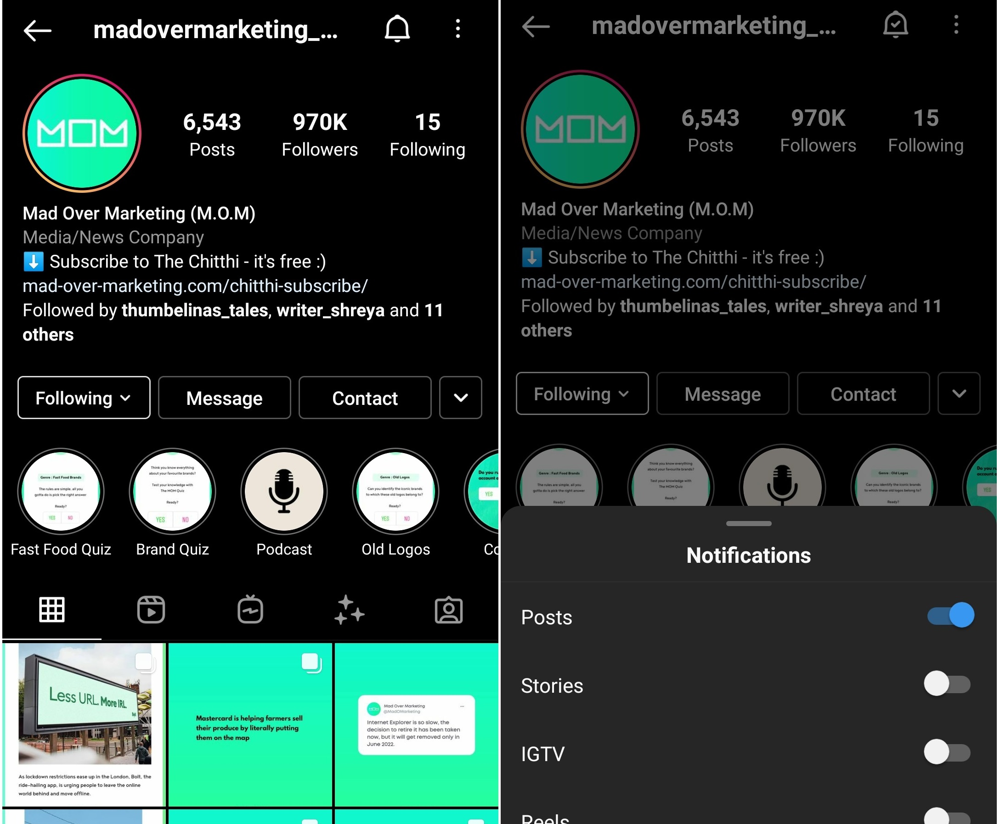

A rise in the number of Profile visits is a sign that your Instagram followers are interested in your products. They are
browsing your store. It indicates your influence over your audience.
So, how to get more visibility on Instagram without spending a dime? How can you increase organic reach and profile
visits? This article will help for sure.
Below I’m writing about an experiment I set up two weeks ago. I wanted to test if I can improve the number of Profile
visits on Blusteak’s Instagram account.
And it worked.
The Profile visits more than doubled within a week. It went up to 1651, from 675 in the previous week. Now, the profile
visits are 5x of what they were two weeks ago.
Want to know how I did it? Keep reading…
Best way to increase Instagram profile visits
I began by turning on notifications for 4-5 pages which attracted good engagement on their posts. Now, whenever they
posted, I started getting notifications.
Then, I noticed funky posts were more relatable to me.
So, I began commenting something humorous on such posts. You have to give something to get something, right?
And when I posted comments in line with the posts’ theme, their followers liked those. They even replied to my comments.
The page also liked and replied.
Increase Instagram reach and Profile visits organically by commenting
I soon noticed a gradual increase in my profile visits. The numbers used to be in hundreds, but they are in thousands
now. OK, that sounds like a slight exaggeration on my part. But I’m hopeful these will keep growing if I continue
interacting with relevant pages.
That’s how to get a wider reach on Instagram; through an ongoing genuine and sensible engagement.
So, make it a habit to put a comment on different accounts you admire. Only 3-5 comments a day would work.
Don’t just say “great post”. Instead, tell them you liked the hat, or how you're craving for coffee seeing their post.
Complement or share a brief thought.
You will increase your brand visibility on Instagram, get more profile visits, and even get some chances of
partnerships.
How to turn on post notifications?
To turn on notifications for an Instagram account, visit that account, and tap the bell icon at the top right. A pop up
will open showing different toggle buttons. Tap the button beside Posts to receive posts’ notifications from that
account.

Other working methods to improve brand visibility on Instagram
1. Post shareable content
You must create and share high-quality and engaging content. But to improve visibility, content should drive shares.
Post images or videos which your followers would share in their stories and DMs. Also, encourage them to share the
content.
2. Upload Instagram Reels
Instagram Reels reach is good these days. So, you must try recording as many Reels as you can, and post them on the
Explore tab. If people like them, the Instagram algorithm will promote them further. You might even get virality, and
thus a massive organic reach.
Suggested Read:
How Small Businesses Can Take Advantage of Instagram Reels?
3. Create interactive Stories
Instagram Stories appear on the top of your followers’ feed. You can create polls, run quizzes or announce giveaway
contests there. You can host Instagram Live or Q&A sessions too. Make some buzz by asking followers to spread the word.
By regularly posting relatable and interactive Stories, you give your followers a reason to keep checking your account.
Conclusion
Improving Instagram organic reach isn’t an impossible task. But if you're looking to get a quick boost to visibility,
try the tested method I mentioned above. Comment on different Instagram accounts you like or in which your target
audience hangs out.
It’s all about sharing relatable content; whether on your account or as a comment on others. You'll reap the rewards
soon – as a better reach and higher profile visits.


 +91 77366 95526
+91 77366 95526
 info@blusteak.com
info@blusteak.com